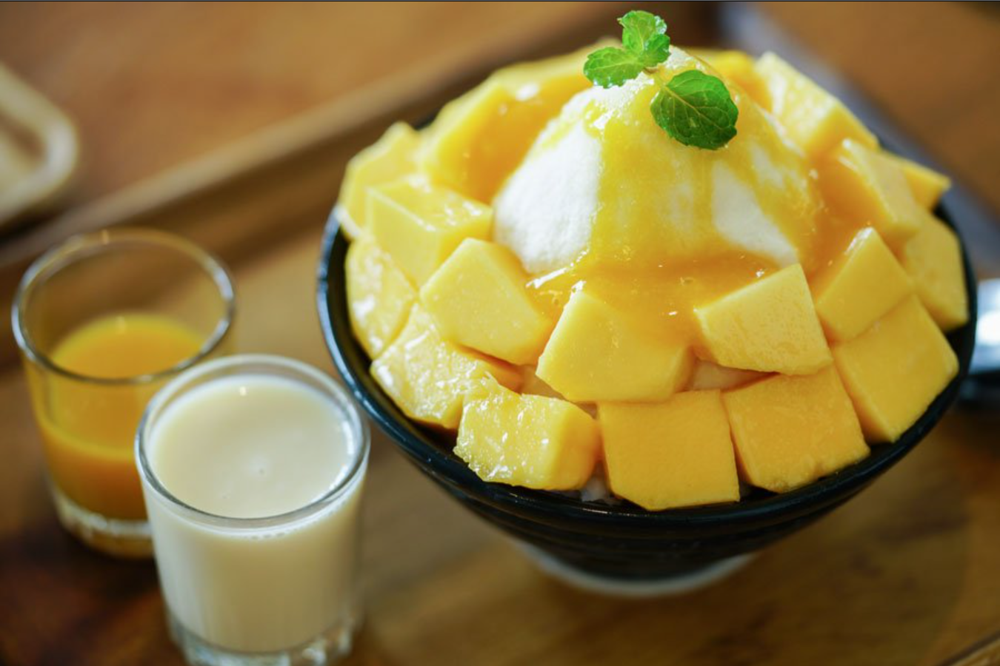

Mango Bingsu

What are Mango Bingsus?
Bingsu, or "bingsoo", is a korean milk-based shaved ice dessert with sweet and fruity toppings.
Ingredients:
- 3 cups whole milk
- ½ cup sweet condensed milk
- ½ tsp koscher salt
- 4 cups frozen mango
- ½ cup granulated white sugar
- ½ cup water
- 3 scoops vanilla icecream
Recipe:
- Combine whole milk, sweet condensed milk, and kosher salt in a closed container. Shake to combine.
-
Place your almond flour and powdered sugar in a food processor for about
a minute.
-
Beat egg whites on medium-low until frothy. Increase speed to medium and
beat for 2 minutes, and then, gradually add the granulated sugar.
-
Increase speed to medium-high and beat until the batter becomes dense.
- Stir in pink food coloring until completely combined.
-
Keep stirring until batter is smooth and forms a ribbon. Do not over
mix!
- Pour into a large pastry bag fitted with a plastic coupler.
-
Place a clean piece of parchment paper over the one with the circles and
put them both on a large cookie sheet.
- Pipe batter to near the edge of the drawn circles.
-
Gently pull out the circle sheet, place on another cookie sheet and
cover with a fresh piece of parchment.
- Pipe 20 more. Let them dry for 15-30 minutes.
-
Bake at 350°F. for about 12 minutes. Let cool. Carefully remove the
bottom piece of parchment from the cookie sheet.
-
Use another cookie and parchment sheet. Pipe the remaining 20 cookies.
Let them dry 15-30 minutes, then bake for 12 minutes. Let them cool.
-
Now, fill the cookies with seedless raspberry jam, and you're done!
Enjoy!